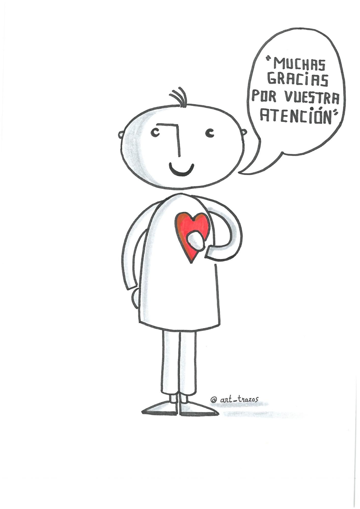

6.2. ASPECTOS NO VOCALES/ NO VERBALES
Incluyen las siguientes variables:
- Proxemia: distancia física entre interlocutores.
- Cronémica: tiempo empleado para dar un mensaje.
- Kinesia: postura corporal, gestualidad y expresión facial.
Por su importancia, vamos a deternos en el último de ellos.
6.3 KINESIA
No hay normas más allá de aquellas que te permitan hacer un uso adecuado de tu voz y te faciliten dar la charla de manera cómoda, segura y sin interferencias. “La naturalidad no es el punto de partida, sino todo lo contrario, el resultado de un largo y laborioso proceso de autodisciplina y de aprendizaje” García Tejera M.C y Hernández Guerrero, J.M. (2008)
El lenguaje corporal a su nivel expresivo se suele dar de manera involuntaria y a nivel comprensivo se procesa en un nivel inconsciente. Tu trabajo como orador consiste en llevar estos elementos a un nivel consciente y voluntario desde una perspectiva global que te permita servirte de ellos para enfatizar tu mensaje.
Muévete por el escenario, quédate en el sitio o permanece sentado pero no seas rígido ni excesivamente relajado en ningún caso.
Sobre el lenguaje corporal hemos leído de todo: prohibido dar la espalda al público; prohibido meterse las manos al bolsillo; los brazos cruzados significan desconfianza; pellizcarse la oreja, nerviosismo; tocarse la nariz, mentira; juntar las yemas de los dedos, confianza; la manos en el corazón, emoción… ¿te resultan familiares? Bien, todas estas normas tienen excepciones, como ya habrás podido comprobar en el visionado de las conferencias. Si vas a seguir este tipo de consejos de manera intencionada, ensaya delante del espejo hasta que lo hagas con naturalidad.
Debes trabajar tu lenguaje corporal si en los ensayos detectas que éste no ayuda o enturbia tu mensaje y, por supuesto, si no sabes qué hacer con tus manos. “Juguetear con objetos, dar vueltas a un botón o al anillo de boda,darse tirones en la oreja…, todo eso distrae a la audiencia de lo que le está diciendo. Si son inconscientes, hay que suprimirlos conscientemente. Si son deliberados…, ha llegado el momento de deliberar otra vez.” S. Leith (2011)
La mirada y la sonrisa merecen un capítulo aparte por la importancia que tienen en la comunicación humana. Mira al público, pasea tu mirada entre todas las filas para dar y generar atención y confianza. Reparte la mirada y no la poses siempre en las mismas personas. La sonrisa te permite transmitir cercanía, calidez y generan empatía. ¡Aprovecha su poder para seducir al público!
Como explican García Tejera M.C y Hernández Guerrero, J.M. (2008) la gestualidad persigue una serie de fines que son útiles al discurso y que no varían la honestidad del mismo:
- naturalidad
- sinceridad
- teatralidad
- seducción, y
- autenticidad
Finalizamos esta unidad con dos charlas que siguen patrones diferenciados en cuanto al uso de los elementos no verbales. Imaginemos que estas dos conferenciantes intentan imitar los aspectos no lingüísticos la una de la otra, rápidamente percibimos que perderían autenticidad.
Jill Bolte Taylor “La transformación neuroanatómica del cerebro adolescente”
Elsa Punset “encuentro #grandesprofesores”
Interpreta siempre tu mejor versión.

Fin. Alberto Lacasa. @art_trazos